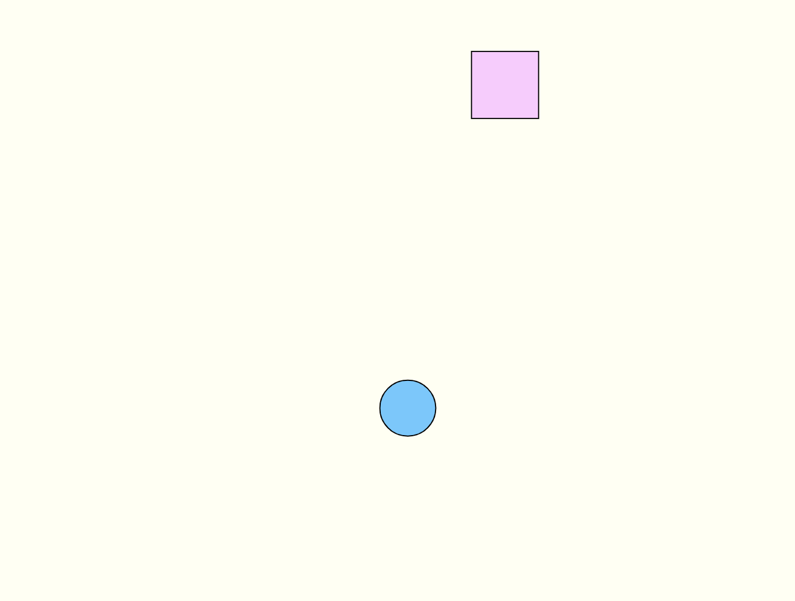
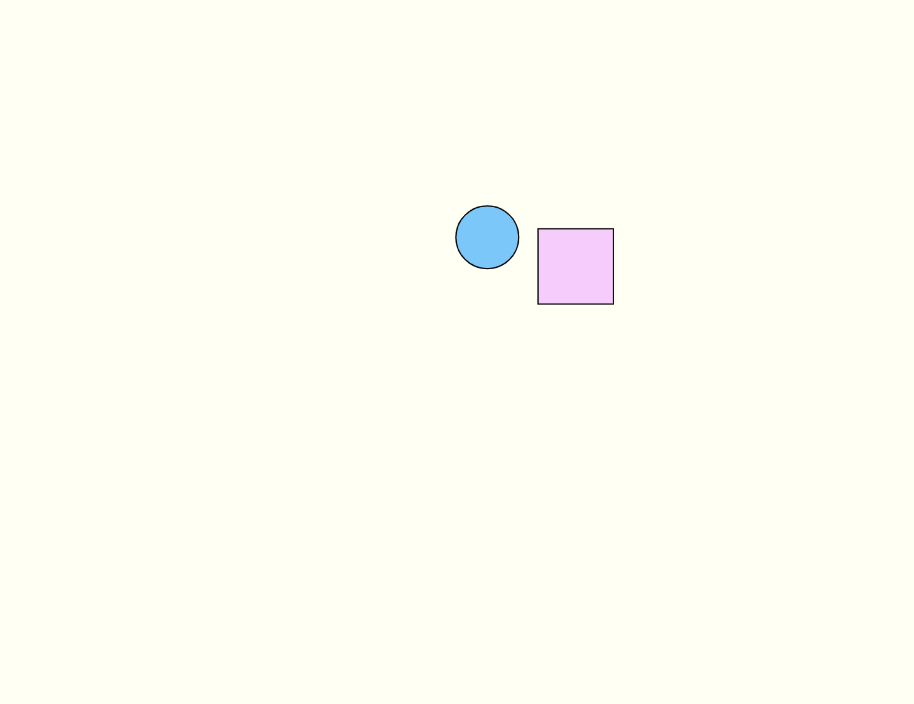
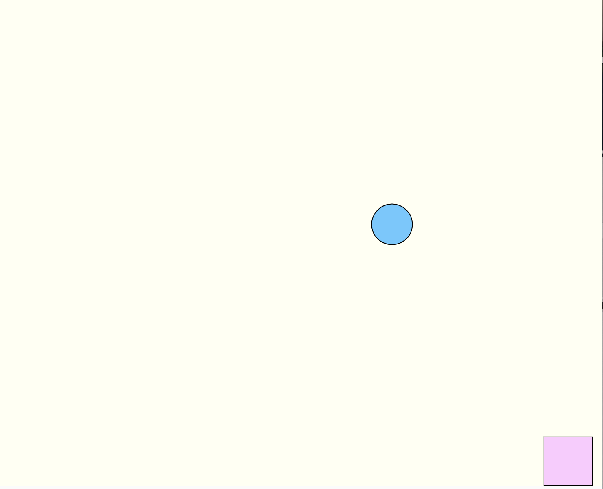
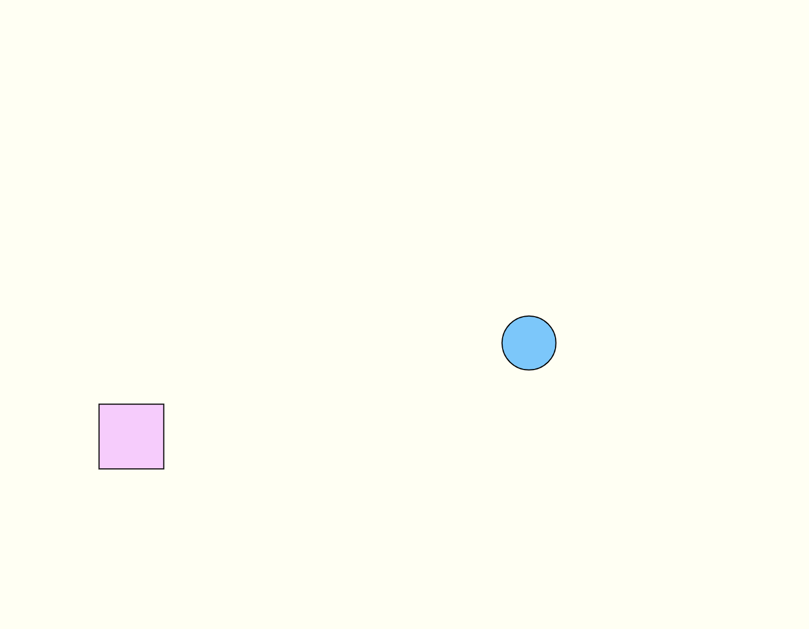
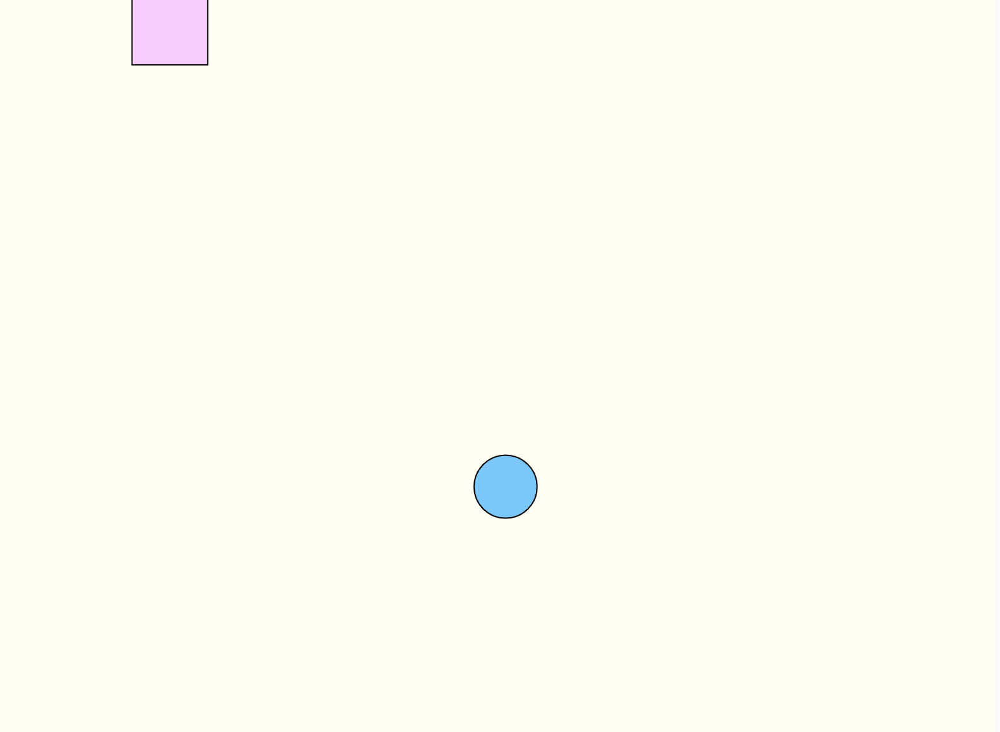
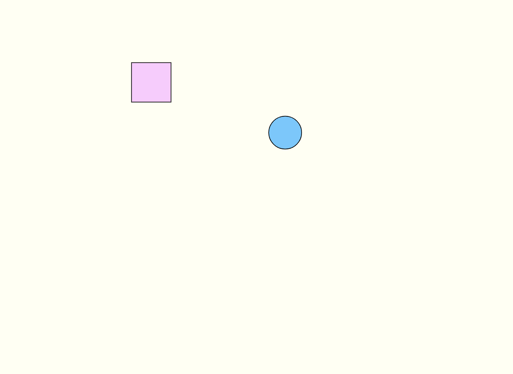

1. Use trigonometric functions such as sin(), cos() to create a repeated motion.
2. Use random() function to create organic shapes or movement patterns.
3. Define a motion that triggers after a set interval. Use the millis() function to track the elapsed time.
     